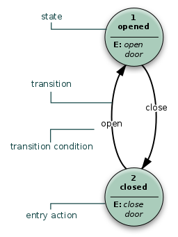

在读这本书之前
冯·诺依曼之前的研究加上本书内容所阐述的一些理论与构想，形成了计算机科学的一个核心领域——自动机理论。在此书问世之前，冯·诺依曼在希克松（Hixon）会议上作了题为《自动机的一般逻辑理论》的报告。所以在此书一开始便涉及到“自动机（Automata）”这个概念，对于初读者而言可能会带来相当的困惑。
自动机理论
如果有人能够讲出关于这种自动机的“理论”，那我就非常满意了。遗憾的是，到目前为止我们所具有的——我必须这让呼吁——仍然只能说还不完全性出的、难于条理化的那样“一批经验”。 ——摘自《计算机与人脑》
按照目前的定义说法，自动机理论是一种将离散数学系统的构造，作用和关系作为研究对象的数学理论，估计这个定义中，冯·诺依曼作为数学家的身份背景起到了重要作用。在理论计算机科学，自动机理论是对抽象机（或者叫做抽象电脑，abstract machine/abstract computer）和他们能解决的问题的研究。这个说法正是直接指向了电脑的理论模型。
自动机，当然并不是所谓的“会自己动的机”，实际上它是有限状态机（FSM）的数学模型。于是我们的话题似乎又牵扯到一个我们并不熟悉的概念。
有限状态机
有限状态机（finite-state machin/FSM）又称有限状态自动机,简称状态机,是表示有限个状态以及在这些状态之间的转移和动作等行为的数学模型。

有限状态机的逻辑模型，我们可以看做是一种状态和状态之间的联系，当前的状态和输入，会决定下一个状态和输出。这也是一般程序员最为熟悉的程序逻辑。
自动机理论又和形式语言理论有着密切的关联，特定的自动机是按照他们所能识别的形式语言来分类。形式语言理论只针对语言的语法，通过数学方法研究。这就是为什么现在我们可以看到，不同的编程语言可以表达相同的语义，却有着不同的语法结构。
两类计算机
写到这里，接下来就是说一说最具有典型意义的自动机——大型的电子计算机。
现有的计算机，可以分为两大类：“模拟”计算机和“数字”计算机。这种分类，是根据计算机星星运算中表示数目的方法而决定的。 ——摘自《计算机与人脑》
“模拟”计算机
模拟计算机，就是用电流、电压等连续变化的物理量直接进行运算的计算机，基于模拟信号原则,使用电路构建起来。模拟计算机中每一个数，都是用一个适当的物理量来表示，比如圆盘的旋转角度、电流强度、电压大小等等这些物理量。
模拟计算机的特性，决定了模拟计算机中，数值总是由连续量来表示，运算过程也是连续的。因此，模拟计算机的精度并不那么好，并且抗外界干扰能力极差。
“数字”计算机
与模拟计算机不同，数字计算机并不依赖于连续变化的物理量来进行计算，而是通过符号和符号的组合来表达一个值，进而进行计算。这些符号通常是电脉冲，由电闸装置控制，通过电脉冲的存在或不存在来传送信息，也就是符号的“值”。这样，就产生了我们熟悉的二进制。
当然，相比于模拟计算机，基于其“离散”的特点，数字计算机具有更多的优势，比如更加精确（毕竟在两个符号之间不可能找到第三个符号），抗干扰能力强。